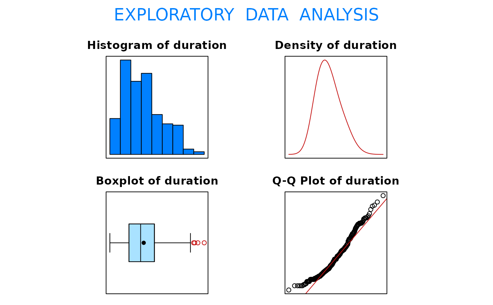

Data used in Exercise 6.60
A data frame/tibble with 295 observations on the following three variables.
time (in months) from HIV infection to the clinical manifestation of full-blown AIDS
age (in years) of patient
a numeric vector
Kalbsleich, J. and Lawless, J., (1989), An analysis of the data on transfusion related AIDS, Journal of the American Statistical Association, 84, 360-372
Kitchens, L. J. (2003) Basic Statistics and Data Analysis. Duxbury
#> [1] "duration"#> Size (n) Missing Minimum 1st Qu Mean Median TrMean 3rd Qu #> 295.000 0.000 0.000 18.000 31.908 29.000 31.154 42.000 #> Max. Stdev. Var. SE Mean I.Q.R. Range Kurtosis Skewness #> 89.000 17.943 321.968 1.045 24.000 89.000 -0.232 0.633 #> SW p-val #> 0.000with(data = Aids, t.test(duration, mu = 30, alternative = "greater") )#> #> One Sample t-test #> #> data: duration #> t = 1.8268, df = 294, p-value = 0.03437 #> alternative hypothesis: true mean is greater than 30 #> 95 percent confidence interval: #> 30.18465 Inf #> sample estimates: #> mean of x #> 31.90847 #>#> #> One-sample Sign-Test #> #> data: duration #> s = 174, p-value = 0.0002434 #> alternative hypothesis: true median is greater than 24 #> 95 percent confidence interval: #> 27 Inf #> sample estimates: #> median of x #> 29 #>#> Conf.Level L.E.pt U.E.pt #> Lower Achieved CI 0.9486 27 Inf #> Interpolated CI 0.9500 27 Inf #> Upper Achieved CI 0.9597 27 Inf